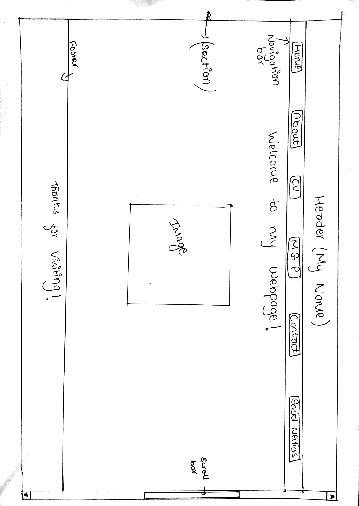
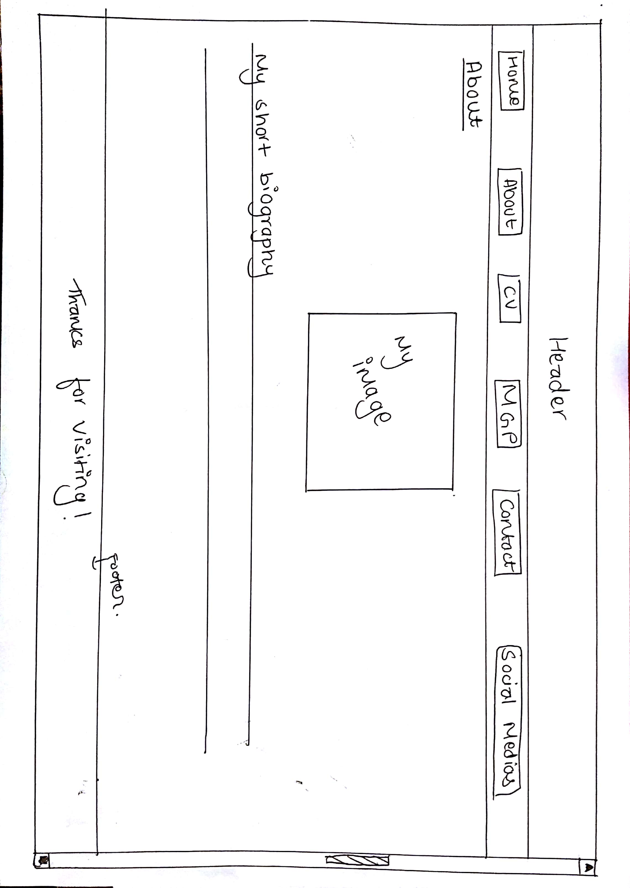
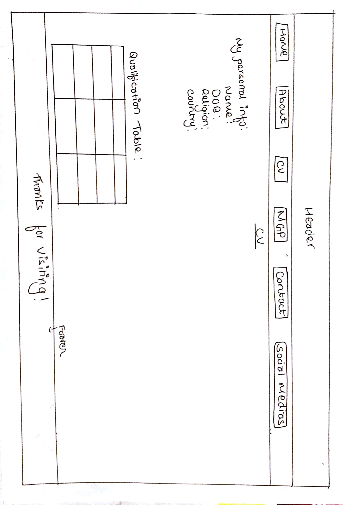
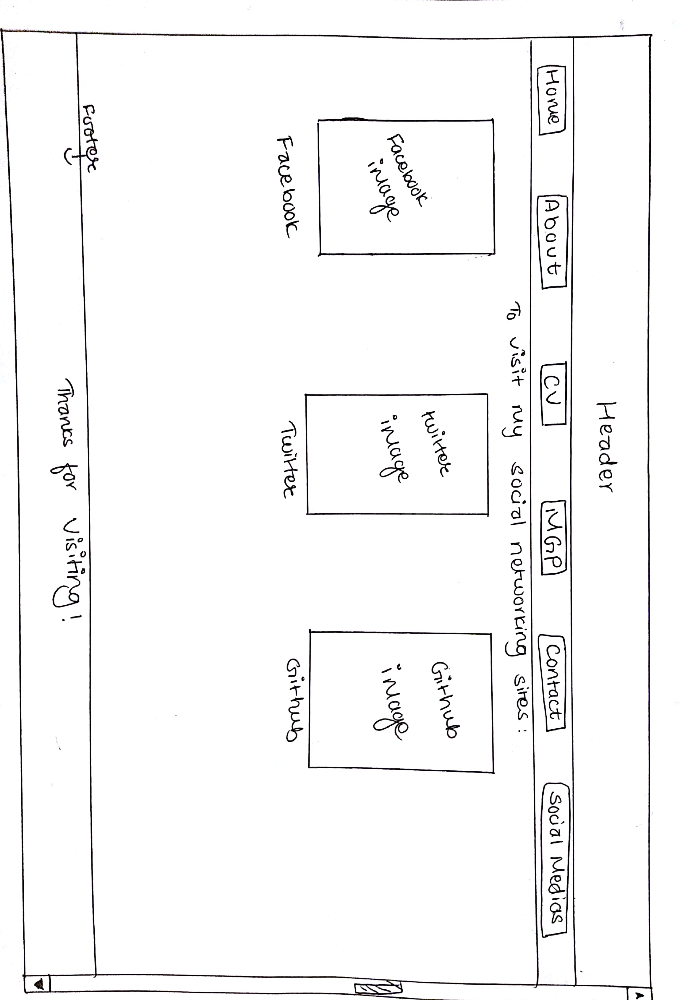
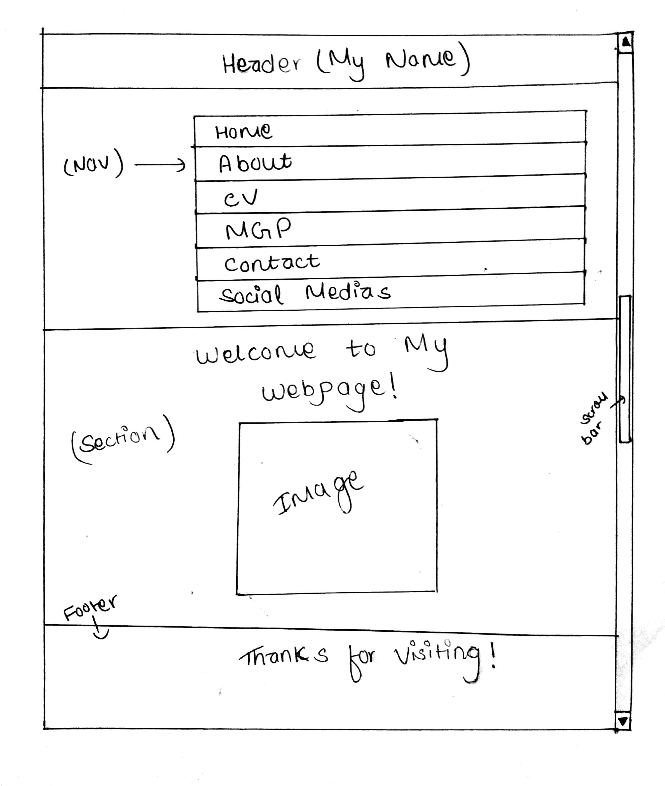
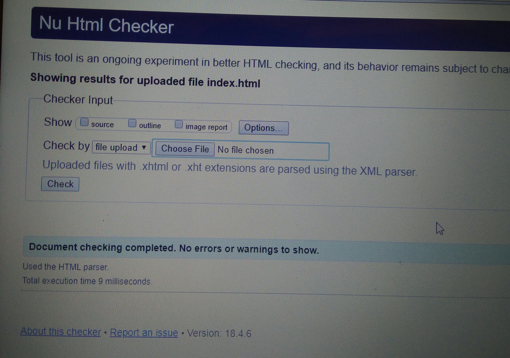
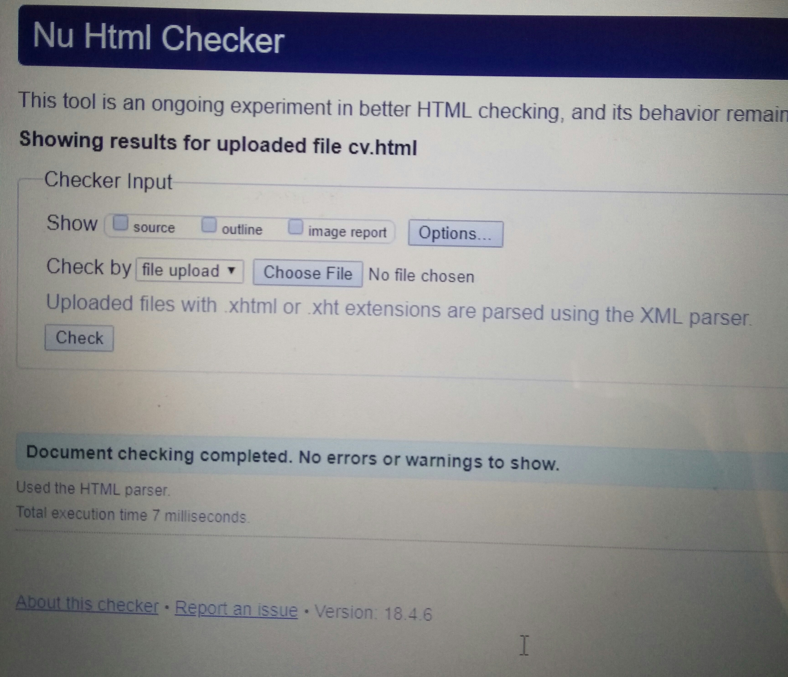
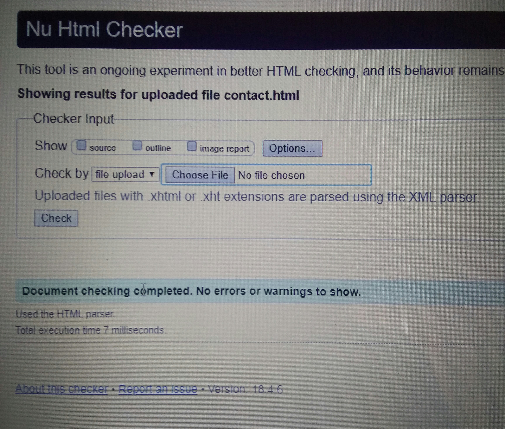
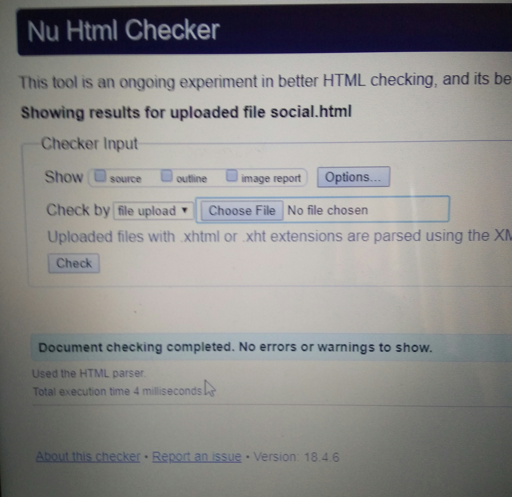

Introduction:
Web development has been a really interesting subject to study. The way we can design various kinds of web pages just by using HTML and CSS is so fun and surprising. It has really been a wonderful time doing this assignment.
There are six main pages inside the website. They are:
- Home
- About
- CV
- Contact
- Social Media
- Models GP
All the pages were created using HTML5 and CSS2/3. All the pages contain proper title, header, navigation bar, section and footer. The pages have been given proper fonts, colors and even animations. The header, navigation bar and footer are same for all the pages. Section contains different contents in different pages. The 'Home' page is the landing page of my webpage and contains a welcome image and some texts. 'About' page contains a short biography about me and my professional aspirations as a developer. 'CV' page contains my CV i.e. my personal information and my experience to date. The next page is 'Contact' page and this page contains a map of my location and a static form to fill up the user's information and contact me. 'Social Medias' page contains the links to my personal social networking sites. The 'Models GP' page contains a hyperlink called "Report" and the report will be accessible by clicking on this hyperlink button. The report has been completed following all the instructions given by the University.
Design decision:
There aren't many websites that I viewed to create my own webpage but "www.facebook.com" gave me an idea to deal with the colors to add in my web pages.
Some images of wireframes for my webpage are shown below:

Home page

About page

CV page

Social Medias page

Responsive page
Group Work:
To complete the project I also contacted my friends/colleagues and discussed in group to create a better webpage. I was unknown about many kinds of codes in CSS but after the group discussion and with the help of my friend's suggestion I was able to create this webpage without many issues. For example, I didn't know how to fix the position of footer and keep it always at the bottom of the page, so I contacted my friends through group chat and with the help of my friend's instructions I was able to complete the task. So, working in group has been really nice and beneficial for me and for my friends too.
Experience of learning in first term:
My experience of learning web development in the first term has been really wonderful and amazing. I didn't know much about HTML and CSS before choosing this course but now I have become really familiar with the course. At first I was confused with using the HTML tags and CSS codes. I didn't know many HTML tags and CSS properties. I also had problem with writing the codes in order but eventually with the help of my tutor and friends I was able to learn all the basic things of HTML and CSS. Social media like 'youtube' and sites like 'w3schools.com' also helped me a lot to learn about more advanced HTML tags and CSS properties. And slowly with the help of all these sources I started to learn more and more about developing and designing web pages. I find this field very interesting and I also find lots of freedom in coding so I think this course will help me enhance my skills even more. Unlike other courses I also find web development really fun and easier to understand. Since everyone visits many websites these days so I also think that working in this field has a huge scope. I have still got a lot of things to learn in the coming future and I still have a lot of time for it. Thus, my experience in this term has been really great.
Evidence of Validating Pages:
All the pages were properly validated using W3C validator and all the errors were rectified.
The evidence of validating pages are shown below:
 W3C validator
W3C validator

index.html
 about.html
about.html

cv.html

contact.html

social.html
 models_gp.html
models_gp.html
References:
W3Schools(1999) W3Schools Online Web Tutorials. W3Schools[online].Available from:https://www.w3schools.com/css/default.asp[Accessed on 2nd April 2018].